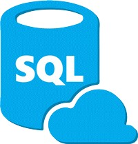
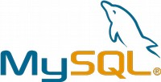

The Web
Categorie
Full Stack Development
Profiel Back End Web Developer Database
 Een Back End Web Developer Database richt zich op server side van website of App en betreft de data laag en daarbij behorende technische infrastructuur. Gelet op aard en karakter zijn er specifieke back end web development database tools beschikbaar.
Een Back End Web Developer Database richt zich op server side van website of App en betreft de data laag en daarbij behorende technische infrastructuur. Gelet op aard en karakter zijn er specifieke back end web development database tools beschikbaar.
→ zie: Wikipedia Front End Back End
Taken
Beheersing skill set en taken Back End Web Developer Software wordt verondersteld. Voor Back End Web Developer Database komt erbij volledige server side programmeren met inzet en gebruik van database. De Back End Web Developer Database beheerst minimaal één database omgeving om taken te kunnen verrichten.
Database keuze
Elke front end development software kan met elke back end database verbinden. Keuze welke database wordt gebruikt hangt af van het doel van gegevensopslag. Niettemin blijkt in de praktijk een populaire voorsortering omtrent welke software met welke database worden gebruikt:
- Talen Python en PHP met MySQL, MariaDB, PostgreSQL en MS SQL
- Framework Node.js met MongoDB en Couchbase voor document management
- Lichtgewicht App en weinig data met SQLite, NeDB en Redis
- Cloud computing met FireBase, AWS en Azure Document DB
- Open Source
-
Deze web development beginner guide richt zich op free open source tooling en dus ook wat betreft databases komen die aan bod en zijn onderstaand verder uitgewerkt. Er bestaan ook proprietry producten van Microsoft en IBM, doe zinvol zijn te bestuderen ingeval van grote hoeveelheden data of complexe functionaliteit.
Database MySQL is half-half dwz het is open source (prima!), echter alleen voor doelgroep "community" is gebruik free, en business wordt geacht licentie vergoeding aan Oracle te betalen. Ten tijde van aankoop door Oracle met dus zodoende het alleenrecht werd MySQL van ene op andere dag proprietry database, met tot gevolg de ontwikkeling van evenknie free open source MariaDB.
→ zie: Wikipedia Open Source
- Lamp Stack
-
LAMP is een acroniem voor een set van free open source tooling, die vaak samen gebruikt worden om dynamische websites te programmeren:
L = Linux, het besturingssysteem
A = Apache HTTP Server, de webserver (of anders prima is NginX)
M = MariaDB of MySQL of PostgreSQL (LAPP) of SQLite (LASP) voor database
P = PHP, Perl en/of Python programmeer talen
→ zie: Wikipedia LAMP Stack
Relational Database
Een relationele database is een database die is opgebouwd volgens een relationeel model. De gegevens worden opgeslagen in tabellen waarin de rijen de soortgelijke groepen informatie, de records vormen, en de kolommen de informatie die voor elk record moet worden opgeslagen. Apps die veel gegevens moeten verwerken, gebruiken hier vaak een relationele database voor.
→ zie: Wikipedia Relational Database
- Kenmerken
-
Verschillende tabellen kunnen met elkaar worden verbonden door een kolom toe te voegen waarin een verwijzing naar een record in een andere tabel wordt opgenomen. Wanneer de gegevens in een relationele database goed gestructureerd zijn, wordt duplicatie van gegevens tot een minimum beperkt, en fouten in de gegevensverwerking voorkomen.
In een relationele database kan data worden opgeslagen, geraadpleegd en gewijzigd middels een relationeel database management systeem, RDBMS. Er zijn meerdere systemen verkrijgbaar. Vele daarvan kunnen in de gestandaardiseerde taal SQL worden geraadpleegd, verwerkt en bewerkt.
SQL

Structured Query Language (SQL) is een ANSI/ISO standaardtaal voor een RDBMS die gebruikt kan worden voor taken zoals het bevragen en het aanpassen van gegevens in een relationele database. SQL kan met vrijwel alle moderne relationele databaseproducten worden gebruikt.
→ zie: Wikipedia SQL
- Kenmerken
-
SQL maakt voor de communicatie met het DBMS gebruik van zogenaamde query's. Een query is een opdracht die naar het DBMS wordt verzonden. Het DBMS zal de opdracht interpreteren en uitvoeren en stuurt eventuele gegevens terug naar het opdrachtgevende programma. Bij data overdracht tussen front end en back end wordt meestal het JSON format gebruikt.
Database MySQL
 Het MySQL van Oracle bestaat onder meer uit een serverprogramma, doorgaans mysqld genoemd. Hierbij staat de d voor daemon, de Unix- of Linux term voor een proces dat op de computer draait zonder inmenging van de gebruiker.
Verder bestaat MySQL uit een verzameling clientprogramma's, zoals mysql en mysqldump waarmee automatisch of interactief met de server gecommuniceerd kan worden. MySQL is een populair databasemanagementsysteem dat voor het gestructureerd opslaan van gegevens voor zeer veel toepassingen wordt gebruikt.
MySQL is only free for community dus proprietry, met dus licentie vergoeding betalen door business. Zie hierna en aanrader voor gebruik het wél free open source MariaDB.
→ zie: Wikipedia MySQL
→ zie: Website Oracle download MySQL free community versie
→ zie: YouTube Videotorial SQL Workbench met database MySQL
- phpMyAdmin
-
WebApp phpMyAdmin is qua functionaliteit te vergelijken met hiervoor beschreven MySQL Workbench, behalve dan dat een WebApp zoals phpMyAdmin niet behoeft te worden gedownload want deze App werkt via een browser.
Met phpMyAdmin kan MySQL databases via de browser beheerd en geraadpleegd kunnen worden. De WebApp kan onder andere databases aanmaken en verwijderen; tabellen aanmaken, verwijderen en veranderen; gegevensvelden aanmaken, verwijderen en aanpassen en SQL commando's aanmaken.
→ zie: Wikipedia phpMyAdmin
→ zie: Website phpMyAdmin get started
→ zie: Overzicht met vergelijk van database tools